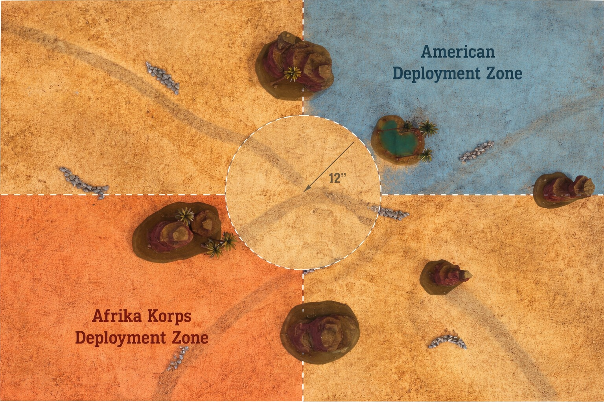
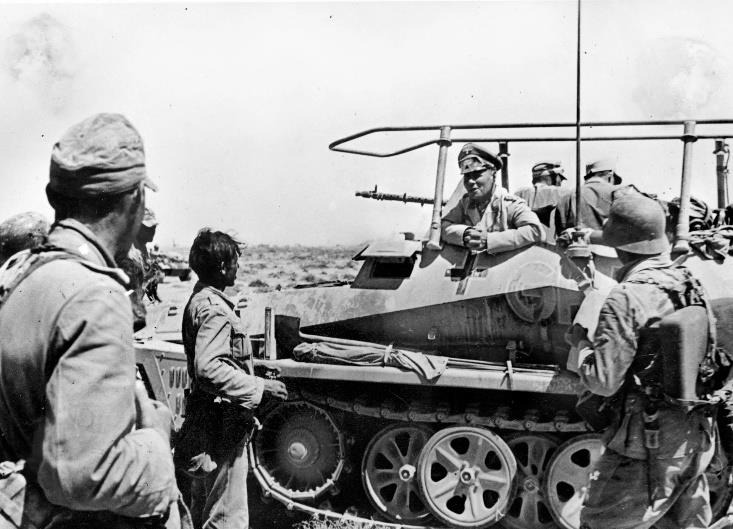

Fuerzas enfrentadas
Informe operacional del paso de Kasserine. Un combate rápido y brutal entre tropas estadounidenses aún inexpertas frente a la guerra del desierto y un Afrika Korps decidido a romper la línea defensiva y explotar la brecha hacia el interior tunecino.
Afrika Korps vs Ejército de Estados Unidos – 1000 puntos.
Defensores: Ejército de Estados Unidos (selector reforzado adecuado, 1000 puntos).
Atacantes: Afrika Korps (selector reforzado alemán África, 1000 puntos).
Despliegue
Siguiendo el mapa, el defensor estadounidense despliega en el cuadrante superior derecho, correspondiente a la zona sombreada azul. El atacante del Afrika Korps entra desde el cuadrante inferior izquierdo, señalado en naranja.
El centro de la mesa contiene una zona neutral circular de 12” de radio que representa el área disputada alrededor del oasis.
El defensor despliega toda su fuerza al inicio y puede usar ocultación si el escenario lo permite. El atacante debe dividir su ejército: al menos la mitad forma la primera oleada entrando por su borde, mientras que el resto queda en reservas.

Reglas especiales
Combate en el desierto
La mesa representa terreno árido con zonas de arena blanda, afloramientos rocosos y un oasis central que cuenta como terreno ligero y proporciona cobertura.
Regla del desierto – Fatiga y calor
El entorno afecta directamente a la movilidad. La infantería no puede realizar órdenes de Run a menos que esté a 6” o menos del oasis.
Objetivo
Afrika Korps: romper la línea americana, controlar el oasis y penetrar hacia la zona de despliegue enemiga.
EE. UU.: resistir el asalto e impedir que el enemigo controle el oasis.
Duración de la partida
La partida dura 6 turnos estándar. Al final del turno 6, con un resultado de 1–3 la partida termina; con un 4–6 se juega un turno adicional.
¡Victoria!
Se obtiene 1 punto de victoria por cada unidad enemiga destruida.
Se obtienen 2 puntos de victoria adicionales si se controla el oasis al final de la partida.
Además, el atacante recibe 3 puntos de victoria por cada unidad que alcance el borde defensor.
Una diferencia de 2 o más puntos de victoria supone una victoria clara. Si la diferencia es menor, el resultado se considera un empate táctico.

